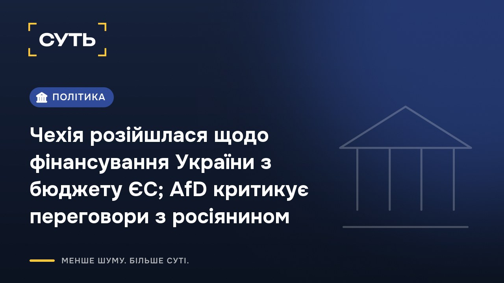

Чехія розійшлася щодо фінансування України з бюджету ЄС; AfD критикує переговори з росіянином

- Співголова німецької AfD критикує заплановані переговори з російським посланцем. — Reuters
- Президент Чехії Петр Павел розкритикував прем’єра Бабіша, який хоче винести фінансування України з довгострокового бюджету ЄС. — ✙DeepState✙🇺🇦
- Генштаб ЗСУ подякував Збройним силам США, Міноборони США й Рамштайну за безпекову допомогу, яка рятує життя українських воїнів. — Генштаб ЗСУ
- Кандидат у президенти Франції Рафаель Глюксманн відповів Тедді Рінеру, який заявив, що війна в Україні не є війною Франції. — Європейська правда
- Президент Володимир Зеленський призначив Дмитра Ткаченка командувачем Сил підтримки Збройних сил України. — Укрінформ
- Військові готують звернення щодо скасування відстрочки для студентів віком 25+, повідомив нардеп Горбенко. — УНІАН
Ця новина — з Telegram-каналу «Суть.»
Коротко, з першоджерел, без шуму.